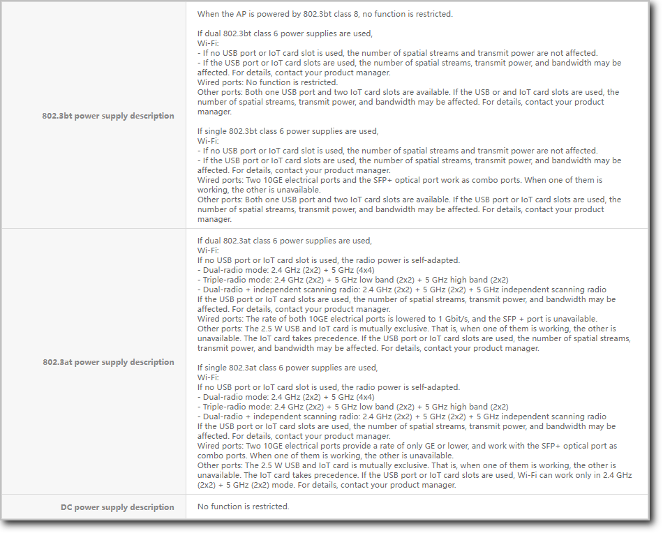

Understanding the PoE Function of APs
Definition
Power over Ethernet (PoE) — also known as Power over LAN (PoL) or active Ethernet — provides electrical power through the Ethernet.
Purpose
As IP phones, network video security, and wireless Ethernet networks become more widely used, the power supply demand for the Ethernet grows increasingly urgent. In most cases, terminal devices require a DC power supply. However, such devices are often installed outdoors or on high ceilings far from the ground and out of reach of most power sockets. Even if a suitable power socket is available, it can be challenging to install the AC/DC converter required by terminal devices. Large-scale LANs typically involve multiple terminal devices, and providing the uniform power supply and management they require can be difficult. The PoE function addresses this problem.
PoE technology is used on the wired Ethernet and is most widely applied on LANs. PoE allows power to be transmitted to terminal devices through data pairs or unused pairs. A PoE-capable device can provide DC power supply for multiple terminal devices, facilitating centralized power supply management. In addition, supplying power to a terminal device requires only one network cable, which is easy to install. This technology provides power over an Ethernet, spanning a distance of up to 100 m.
With the development of the PoE technology, IEEE 802.3af, IEEE 802.3at, and IEEE 802.3bt power supply standards are introduced one after the other.
- PoE technology (IEEE 802.3af) is used to effectively provide centralized power for terminals such as IP phones, wireless access points (APs), chargers of portable devices, POS machines, cameras, and data collectors.
- PoE+ technology (IEEE 802.3at) provides high-power PoE power supply for terminals such as dual-band access terminals, video phones, and pan-tilt-zoom (PTZ) video security systems.
- PoE++ technology (IEEE 802.3bt) provides higher-power PoE power supply to meet the power supply requirements of higher-power devices.
Benefits
- As there is no need to deploy independent power sockets or AC/DC converters, cabling and installation costs are reduced.
- PoE works with the uninterruptible power supply (UPS) to provide redundant power supply for devices such as IP cameras and IP phones, thereby preventing power outage and improving network reliability.
PoE Precautions for APs
- When the PoE power supply standard for an AP is changed from 802.3af to 802.3at or from 802.3at to 802.3bt, the AP does not restart. However, when 802.3bt is changed to 802.3at or 802.3at is changed to 802.3af, the AP may restart.
- When an 802.3at AP that does not support hardware detection for PoE power supply is connected to an 802.3af-capable switch, the AP restarts repeatedly if Link Layer Discovery Protocol (LLDP) is disabled on the switch.
- When an 802.3at AP supporting hardware detection for PoE power supply is connected to an 802.3af-capable switch of Cisco, the AP restarts repeatedly if LLDP is disabled on the Cisco switch.
- 802.3bt APs cannot interconnect with 802.3af switches or Cisco's 802.3at switches.
- If the interval at which LLDPDUs are sent is longer than 90s, LLDP negotiation may time out. As a result, the device incorrectly considers that LLDP is not supported or LLDP is disabled.
Components in a PoE System
- Power-sourcing equipment (PSE): a PoE device that feeds power to a PD through an Ethernet. It provides functions such as detection, analysis, and intelligent power management.
- Powered device (PD): a device that receives power, such as a wireless AP, portable device charger, POS machine, and camera. PDs are classified into standard and nonstandard PDs depending on whether they conform to IEEE standards.
- PoE power module: provides power to a PoE system. The number of PDs connected to a PSE is limited by the power output of a PoE power module. PoE power modules are classified as either built-in or external depending on whether they are pluggable.
PoE Standards Compliance
PoE power supply standards include IEEE 802.3bt, IEEE 802.3at, and IEEE 802.3af. These standards differ in technological features and parameters. For details, see PoE Technical Specifications.
- 802.3bt AP: is also called UPoE AP in compliance with IEEE 802.3bt and IEEE 802.3at.
- 802.3at AP: complies with IEEE 802.3at and IEEE 802.3af.
- 802.3af AP: complies only with IEEE 802.3af. With the IEEE 802.3af power supply, functions of an 802.3af AP are not restricted.
Functions supported by APs vary depending on power supply standards.
How Do I Check the Power Supply Downgrade Limit of an AP?
When the power supply is insufficient, the impact on the AP functions and performance varies depending on AP models. Check the power supply downgrade limit as follows: Visit Info-Finder, select a product series, and view hardware specifications in the hardware center. You can check the power supply downgrade limits at different power supply levels.

How Do I Determine a Power Supply Downgrade of an AP?
- Check AP information on the WAC. The ExtraInfo field is displayed as P.
<HUAWEI> display ap all ... ---------------------------------------------------------------------------------------------------- ID MAC Name Group IP Type State STA Uptime ExtraInfo ---------------------------------------------------------------------------------------------------- 0 00e0-fcf6-76a0 area_1 ap-group1 192.168.120.254 AirEngineXXXX nor 0 4H:49M:11S P ...
- The AP generates an alarm indicating that the power supply is insufficient.
Case 1:
WLAN/4/hwApPowerLimitedTrap_active: The AP works in Limited mode due to insufficient power supply.
Case 2:
WLAN/2/hwApPowerInsufficientTrap_active: AP power supply is insufficient.
For details, click Troubleshooting AP Power Supply Downgrade Issues.
Working Process of the PoE Power Supply
802.3bt AP
Figure 1 shows the PoE working process of an 802.3bt AP.
802.3at AP
Figure 2 shows the PoE working process of an 802.3at AP.

802.3af AP
An 802.3af AP always works in IEEE 802.3af power supply mode after startup.
PoE Power Supply Mode
According to the IEEE standard, PSEs are used to supply power to PDs and are classified into MidSpan and Endpoint. MidSpan indicates that the PoE module is installed outside the device, whereas Endpoint indicates that the PoE module is integrated into the device. Huawei PSEs have PoE modules integrated inside, belonging to the Endpoint PSE category. Endpoint PSEs are compatible with 10BASE-T, 100BASE-TX, 1000BASE-T, and 2.5GE BASE-T interfaces and therefore can be more widely used than MidSpan PSEs.
In Alternative A mode, power is transmitted over pairs of lines that transmit data.
The PSE provides power for the PD over line pairs 1/2 and 3/6. Pins 1/2 use the positive voltage while pins 3/6 use the negative voltage. 10BASE-T and 100BASE-TX interfaces use line pairs 1/2 and 3/6 to transmit data, while 1000BASE-T interfaces use all four line pairs to transmit data. As DC power and data frequency are independent, power and data can be transmitted over the same pair of lines.
In Alternative B mode, power is transmitted over idle pairs of lines.
The PSE provides power for the PD over line pairs 4/5 and 7/8. Pins 4/5 use the positive voltage and pins 7/8 use the negative voltage.
In general, standard PDs must support both modes, whereas PSEs can support only one. Huawei PSEs support only Alternative A.
PoE Technical Specifications
PoE technical specifications vary according to PoE technologies. You can select the required PoE technology to supply power for PDs according to PD requirements.
Power Supply Technology |
PoE |
PoE+ |
PoE++ |
|---|---|---|---|
Power supply standards compliance |
IEEE 802.3af |
IEEE 802.3at |
IEEE 802.3bt |
Power supply distance |
100 m |
100 m |
100 m |
Power class |
0-3 |
0-4 |
0-8 |
Maximum current |
350 mA |
600 mA |
1730 mA |
PSE output voltage |
44–57 V DC |
50–57 V DC |
50–57 V DC |
PSE output power |
≤ 15400 mW |
≤ 30000 mW |
≤ 90000 mW |
PD input voltage |
36–57 V DC |
42.5–57 V DC |
42.5–57 V DC |
Maximum PD power |
12950 mW |
25500 mW |
81600 mW |
Cable requirements |
CAT-5e or better |
CAT-5e or better |
CAT-5e or better |
Number of power cable pairs |
2 |
2 |
4 |